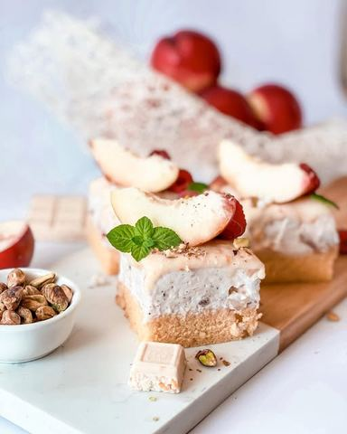

Kolač sa nektarinama i belom kokos čokoladom

Moja beleška
SačuvanoSastojci
- Biskvit
- Nektarina sos
- Krem fil
- Preliv
Priprema
Preliv za biskvit: 100 ml soka od breskve Za pripremu biskvita potrebno je penasto umutiti jaja sa šećerom, pa dodati rendanu koricu limuna, ulje i mleko, lepo povezati i na kraju dodati brašno promesano sa praškom za pecivo, lagano umešati i izliti u kalup (28x18cm) i peći na 180C 20 minuta. Dok se biskvit peče za nektarina sos potrebno je sve sastojke sjediniti i na potpuno laganoj vatri prokrčkaju uz konstantno mešanje nekih 10ak minuta. Potpuno prohladiti biskvit i sos i pripremiti fil. Umutiti krem sir sasvim lagano sa šećerom u prahu. Tome dodati umućenu slatku pavlaku, pa izrendati 100 gr čokolade i dodati sos, sve povezati spatulom. Biskvit izbuškati vikjuskom, preliti sokom, premazati filom, pa ostaviti na hladjenju. Na kraju preliti istopljenom belom čokoladom sa slatkom pavlakom, dodati po neku svežu nektarinu, malinu, seckane pistaće i uživajte u zanosnom i moćnom ukusu. Neka vas ne obeshrabri dužina recepta priprema je lagana, a kolač vredan isprobavanja 🍑
Originalni opis sa Instagrama
Kolač sa nektarinama i belom kokos čokoladom 🍑 Poželela sam jedan kremast, lagan, a opet nekako moćan i drugačiji letnji kolač. I najiskrenije dobila sam i više od toga. 🥰 Kombinovala sam natopljen mekani biskvit sa filom od krem sira, bele čokolade sa kokosom i sosom od nektarina, pa opet prelila sa još malo bele čokolade.. Raj za nepca upotpunilo je malo svežih nektarinama i malina preko uz sitno seckane pistaće ☺️ Luuudilo od letnjeg kolača, jedva čekam da se u to sami i uverite 🥰🥰🥰 Sve sastojke sam pronašla u @lidlsrbija, a ostavljam vam i slike radi lakšeg snalaženja ☺️ Biskvit: •2 jaja •50gr šećera •pola kore od limuna izrendane •50 ml ulja •100 ml mleka •125gr brašna •1/2 praška za pecivo Preliv za biskvit: 100 ml soka od breskve Nektarina sos: •400 gr na sitnije kockice seckanih nektarina (oko 3 veće 🍑) •50 ml vode •sok od pola limuna •vanilin šećer •60 gr kristal šećera •1/2 kašičice cimeta •3 kašičice gustina Krem fil: •400 gr krem sira •160 gr šećera u prahu •200 ml slatke pavlake •100 gr rendane bele čokolade sa kokosom i kornfleksom Preliv: •200 gr čokolade sa kokosom i kornfleksom •80 ml slatke pavlake Za pripremu biskvita potrebno je penasto umutiti jaja sa šećerom, pa dodati rendanu koricu limuna, ulje i mleko, lepo povezati i na kraju dodati brašno promesano sa praškom za pecivo, lagano umešati i izliti u kalup (28x18cm) i peći na 180C 20 minuta. Dok se biskvit peče za nektarina sos potrebno je sve sastojke sjediniti i na potpuno laganoj vatri prokrčkaju uz konstantno mešanje nekih 10ak minuta. Potpuno prohladiti biskvit i sos i pripremiti fil. Umutiti krem sir sasvim lagano sa šećerom u prahu. Tome dodati umućenu slatku pavlaku, pa izrendati 100 gr čokolade i dodati sos, sve povezati spatulom. Biskvit izbuškati vikjuskom, preliti sokom, premazati filom, pa ostaviti na hladjenju. Na kraju preliti istopljenom belom čokoladom sa slatkom pavlakom, dodati po neku svežu nektarinu, malinu, seckane pistaće i uživajte u zanosnom i moćnom ukusu. Neka vas ne obeshrabri dužina recepta priprema je lagana, a kolač vredan isprobavanja 🍑 #mojirecepti #kolac #letnjikolac #kolacsanektarinama #belacokolada #lidlsrbija